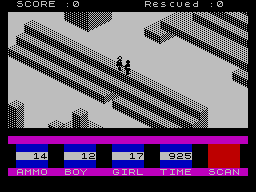

<meta charset="utf-8">
<meta name="viewport" content="width=device-width, initial-scale=1">
<title>{{title}}</title>
<link rel="preconnect" href="https://fonts.googleapis.com">
<link rel="stylesheet" href="https://fonts.googleapis.com/css2?family=Lato:wght@400;700;900&family=IBM+Plex+Mono:wght@400;500&display=swap">
<style>
:root{
  --bg:#23262d; --paper:#e9e7e1; --surface:#ffffff; --surface-2:#f1efea; --line:#d5d3cc; --line-soft:#e0ded8;
  --ink:#2f3136; --ink-soft:#55585f; --ink-mute:#80838a;
  --link:#1f5fa8; --link-hover:#154480; --accent:#1f5fa8;
  --amber:#c25a00; --cyan:#1f5fa8; --coral:#d04a3a; --green:#2a8a4a; --violet:#4a5bd6; --hl:#fff0c2;
  --chip:#2f3136; --chip-ink:#ffffff;
  --c64blue:#40318d; --c64grey:#686868;
  --fd:'Lato',system-ui,sans-serif; --fb:'Lato',system-ui,sans-serif; --fm:'IBM Plex Mono',ui-monospace,Menlo,monospace;
  --col:1080px; --gx:68px; --fs:17px; --lh:1.6; --hw:900; --h1:46px; --h2:26px; --sy:48px; --pp:26px; --r:10px;
  --plate-shadow:0 1px 2px rgba(0,0,0,.05),0 4px 14px rgba(0,0,0,.05);
}
*{box-sizing:border-box}
html{background:var(--bg);min-height:100%}
body{background:var(--paper);color:var(--ink);font-family:var(--fb);font-size:var(--fs);line-height:var(--lh);max-width:var(--col);margin:0 auto;min-height:100vh;padding:0 0 4rem}
h1,h2,h3{font-weight:var(--hw);letter-spacing:-.01em;text-wrap:balance;color:var(--ink);margin:0}
.wrap{padding:0 var(--gx)}
.hero{padding:48px var(--gx) 8px;text-align:left}
.eyebrow{font-family:var(--fm);font-size:12px;letter-spacing:.08em;text-transform:uppercase;color:var(--ink-mute);margin:0 0 10px}
.hero h1{font-size:var(--h1);line-height:1.15;letter-spacing:-.02em;margin:0 0 14px}
.hero .sub{margin:0 0 .6em;color:var(--ink-soft)}
section{padding:var(--sy) 0 24px}
section:last-of-type{border-bottom:none}
.fig{font-family:var(--fm);font-size:12px;letter-spacing:.08em;text-transform:uppercase;color:var(--ink-mute);margin:0 0 10px}
h2.t{font-size:var(--h2);margin-bottom:12px}
.lede{color:var(--ink-soft);margin:0 0 30px}
.plate{background:var(--surface);border:1px solid var(--line);border-radius:var(--r);padding:var(--pp);box-shadow:var(--plate-shadow)}
.cap{font-size:14px;color:var(--ink-mute);margin-top:14px;line-height:1.55}
.cap b{color:var(--ink);font-weight:700}
code{font-family:var(--fm);font-size:.82em;background:var(--chip);color:var(--chip-ink);border-radius:4px;padding:2px 6px;overflow-wrap:break-word;-webkit-box-decoration-break:clone;box-decoration-break:clone}

</style>
<style>
:root{--accent:#915900;--link:#755100} .plate{margin:18px 0} .two{display:grid;grid-template-columns:1fr 1fr;gap:18px}.two>*{min-width:0}img.screen{display:block;width:100%;image-rendering:pixelated;border-radius:6px}canvas{display:block;max-width:100%;height:auto;background:#f8f6ee;border-radius:6px} .bar{display:flex;gap:9px;flex-wrap:wrap;align-items:center;margin:14px 0}button{padding:7px 11px}label{display:inline-flex;gap:8px;align-items:center}output,.mono{font-family:var(--fm);font-size:.85em}.small{font-size:14px;color:var(--ink-soft)} .wide{width:100%}table{width:100%;border-collapse:collapse;font-size:15px}td,th{text-align:left;padding:8px;border-bottom:1px solid #d7d0c1}.keys{display:flex;gap:8px;flex-wrap:wrap}.caption{font-size:14px;color:#656157;margin:12px 0 0} .signal{height:70px;background:#222}.error{color:#a21d12} .aa-pick{display:flex;gap:7px;align-items:center;max-width:100%;min-width:0}.aa-pick select{min-width:0;flex:1;width:240px;max-width:calc(100% - 78px)}.bar>*{max-width:100%;min-width:0} .aa-pick select{max-width:75%}h3{font-size:20px;margin-top:24px}a{color:var(--link)} .badge{font-family:var(--fm);font-size:13px} .stats{font-size:22px;font-weight:700} @media(max-width:720px){:root{--gx:18px;--h1:36px;--sy:32px}.two{grid-template-columns:1fr}.hero{padding-top:30px}table{font-size:13px}td,th{padding:6px}.plate{padding:14px}} .gallery{display:grid;grid-template-columns:1fr 1fr;gap:18px;margin:20px 0;align-items:start}.group{margin:0;padding:14px 16px 16px;background:#fbf9f2;border:1px solid #e0d9c8;border-radius:8px;min-width:0}.group h3{margin:0;font-size:19px}.row{margin:12px 0 0}.row>span{display:block;font-size:14px;color:#57534a;margin-bottom:5px}canvas.pics{width:288px;height:72px;max-width:100%;image-rendering:pixelated;background:none;border-radius:0}.group p{font-size:14px;color:#656157;margin:10px 0 0} @media(max-width:720px){.gallery{grid-template-columns:1fr}}
</style><!-- tabs --><header class="hero"><p class="eyebrow">ZX Spectrum · 1983 · Quicksilva</p><h1>{{title}}</h1><p class="sub">Every picture that moves through the city, all on one page, drawn the way the game draws it.</p></header><main class="wrap"><section id="shapes"><h2 class="t">Every picture that moves through the city</h2><p>Each picture is 16 pixels wide and 16 pixels high. The game draws it in two steps. First a mask cuts a hole in the background, in the shape of the figure. Then the figure’s own pixels go into the hole. Below, each picture is drawn the same way, over the striped pattern the walls use. The drawing code is at <code>$80A0</code>.</p><p>Each pose has four pictures, one for each way a figure can face on the screen. When you turn the camera, the game picks a different one of the four.</p><div class="gallery"><figure class="group" id="ant-pictures"><h3>The ants</h3><div class="row"><span>A step that brings it closer to you: the legs move</span><canvas class="pics" width="72" height="18" style="width:288px" data-show="F8 F9 FA FB|FC FD FE FF" aria-label="An ant walking, seen from four sides"></canvas></div><div class="row"><span>Any other step: the legs stay still</span><canvas class="pics" width="72" height="18" style="width:288px" data-show="F8 F9 FA FB" aria-label="An ant standing, seen from four sides"></canvas></div><p>So an ant that has lost track of you slides along without walking. <a href="index.html#ants">How the ants hunt</a> shows the check behind this.</p></figure><figure class="group" id="puff-pictures"><h3>The puff</h3><div class="row"><span>As it plays</span><canvas class="pics" width="18" height="18" style="width:72px" data-show="F4|F7|F6|F5" aria-label="The puff animation"></canvas></div><div class="row"><span>Its four pictures, in the order they play</span><canvas class="pics" width="72" height="18" style="width:288px" data-show="F4 F7 F6 F5" aria-label="The four puff pictures"></canvas></div><p>The same puff shows when a grenade goes off, when an ant dies, and when you blow yourself up.</p></figure><figure class="group" id="boy-pictures"><h3>The boy</h3><div class="row"><span>Walking</span><canvas class="pics" width="72" height="18" style="width:288px" data-show="DC DD DE DF|E0 E1 E2 E3" aria-label="The boy walking, seen from four sides"></canvas></div><div class="row"><span>Throwing a grenade, or landing after a short drop</span><canvas class="pics" width="72" height="18" style="width:288px" data-show="E4 E5 E6 E7" aria-label="The boy with arms out"></canvas></div><div class="row"><span>Lying down after a nasty fall</span><canvas class="pics" width="72" height="18" style="width:288px" data-show="E8 E9 EA EB" aria-label="The boy lying down"></canvas></div><div class="row"><span>Falling</span><canvas class="pics" width="72" height="18" style="width:288px" data-show="EC ED EE EF" aria-label="The boy falling"></canvas></div></figure><figure class="group" id="girl-pictures"><h3>The girl</h3><div class="row"><span>Walking</span><canvas class="pics" width="72" height="18" style="width:288px" data-show="6C 6D 6E 6F|70 71 72 73" aria-label="The girl walking, seen from four sides"></canvas></div><div class="row"><span>Throwing a grenade, or landing after a short drop</span><canvas class="pics" width="72" height="18" style="width:288px" data-show="74 75 76 77" aria-label="The girl with arms out"></canvas></div><div class="row"><span>Lying down after a nasty fall</span><canvas class="pics" width="72" height="18" style="width:288px" data-show="78 79 7A 7B" aria-label="The girl lying down"></canvas></div><div class="row"><span>Falling</span><canvas class="pics" width="72" height="18" style="width:288px" data-show="7C 7D 7E 7F" aria-label="The girl falling"></canvas></div></figure><figure class="group" id="grenade-pictures"><h3>The grenade</h3><div class="row"><span>Seen from four sides</span><canvas class="pics" width="72" height="18" style="width:288px" data-show="68 69 6A 6B" aria-label="The grenade, seen from four sides"></canvas></div></figure><figure class="group" id="unused-pictures"><h3>An aeroplane the game never shows</h3><div class="row"><span>Facing four ways</span><canvas class="pics" width="72" height="18" style="width:288px" data-show="F0 F1 F2 F3" aria-label="An aeroplane facing four ways"></canvas></div><p>The game never picks these four, so the plane never appears in play. What it was for is unknown. <a href="discoveries.html#unused-pictures">Discoveries</a> has more.</p></figure></div><p class="caption">The walking pictures change about six times a second, about as often as they do in the game.</p></section><section id="walls"><h2 class="t">The walls are drawn by code</h2><p>The game has no pictures of walls. Code at <code>$8203</code> and <code>$8703</code> draws each wall’s edges and striped faces, one piece at a time, into a hidden copy of the view. Which of the two runs depends on which way the camera faces.</p><p>The game also keeps the distance of everything it draws. That lets it put people, ants and the grenade in front of the right walls and behind the others. It builds the whole picture in memory first, then copies it to the screen. <a href="index.html#frame">The rebuilt play screen</a> shows the result.</p><figure><figcaption class="caption">A <a href="https://crashonline.org.uk/01/antattack.htm">screenshot from CRASH’s review</a> in 1984 shows the striped walls and the panel below the view.</figcaption></figure></section></main>
<script src="../../lib/spectrum.js"></script>
<script>
'use strict';
const $=s=>document.querySelector(s);
function problem(e){let p=document.createElement('p');p.className='error';p.textContent=e.message;document.querySelector('main').prepend(p);}
(typeof Spectrum==='undefined'?Promise.reject(Error('The shared Spectrum renderer is available in the built site.')):Spectrum.load('listing.json')).then(({ram:m})=>{
 // One picture: (background AND mask) OR picture, as $80A0 does; ink black, cleared pixels white, the wall stripes grey.
 const rows=[...document.querySelectorAll('canvas.pics')].map(c=>({c,x:c.getContext('2d'),frames:c.dataset.show.split('|').map(f=>f.split(' ').map(h=>parseInt(h,16)))}));
 function paint(r,t){const ids=r.frames[t%r.frames.length],img=r.x.createImageData(r.c.width,18),d=img.data;
  for(let y=0;y<18;y++)for(let x=0;x<r.c.width;x++){const n=Math.floor(x/18),px=x%18-1,py=y-1,bg=(py&1?0x55:0xaa)>>(7-(px&7))&1;let v=[244,240,229];
   if(px>=0&&px<16&&py>=0&&py<16){const k=0x8000+ids[n]*64+py*4+(px>>3)*2,bit=7-(px&7);v=m[k+1]>>bit&1?[0,0,0]:m[k]>>bit&1?(bg?[150,150,150]:[230,230,230]):[255,255,255];}
   const o=(y*r.c.width+x)*4;d[o]=v[0];d[o+1]=v[1];d[o+2]=v[2];d[o+3]=255;}
  r.x.putImageData(img,0,0);}
 let t=0;const tick=()=>{rows.forEach(r=>paint(r,t));t++;};tick();
 // About 162 ms between engine passes while walking, so about six picture changes a second.
 setInterval(tick,162);
}).catch(problem);
</script>
